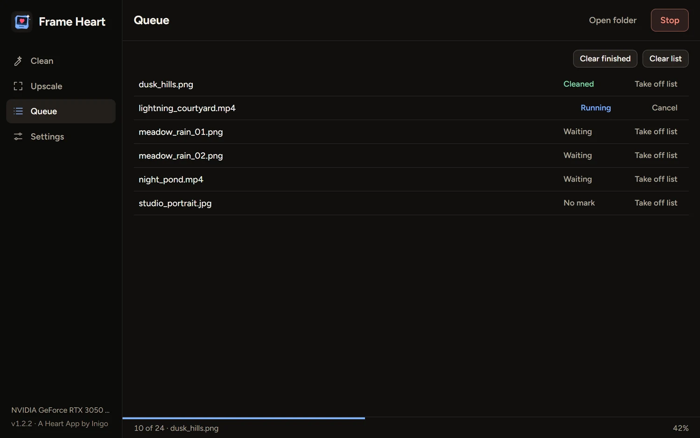
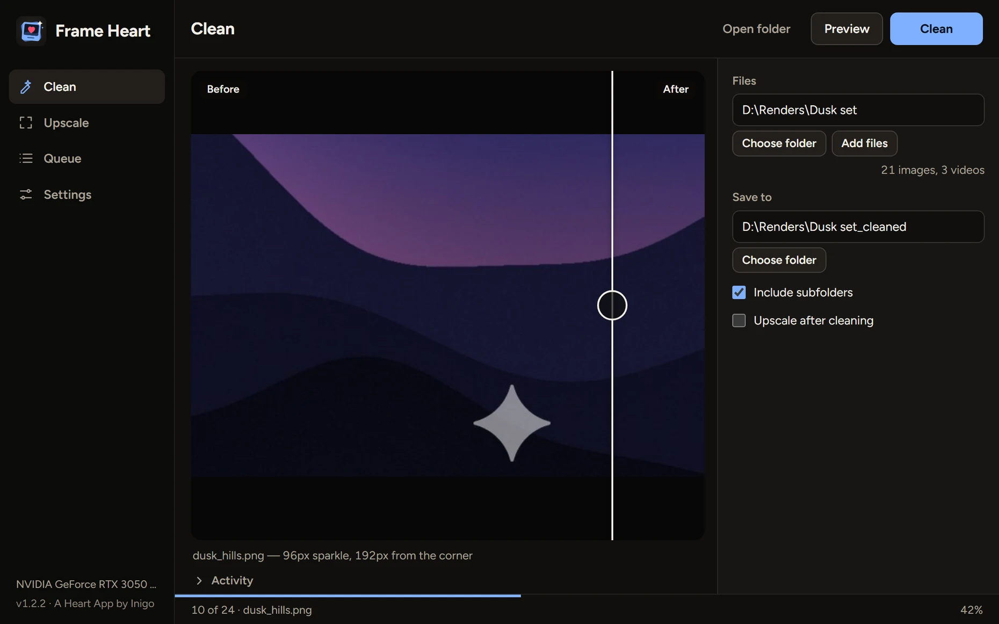
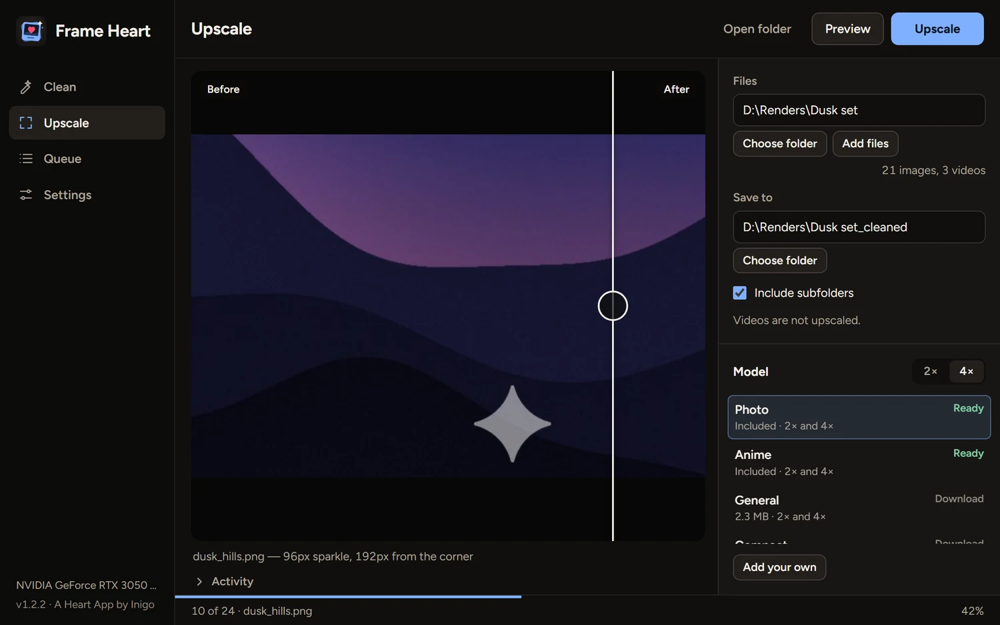

It finds the mark for you
There’s nothing to choose. Frame Heart checks each file and picks the right way to clean it.
- The Gemini star at any size
- Corner labels from Grok, Doubao, Jimeng, Kling and others
- Whole folders, in one queue

Frame Heart finds a generator’s visible corner mark and removes it by itself, on pictures and on video. It works particularly well on images and videos made with Gemini.
Download for Windowsor see every release

Drop in a file or a whole folder. Frame Heart works out what’s on each one, and your originals stay as they are.
There’s nothing to choose. Frame Heart checks each file and picks the right way to clean it.

Each clip is studied first, so Frame Heart learns the star that clip really carries. Then it cleans every frame, in night scenes as well as bright ones.
Real-ESRGAN models run on your graphics card and take pictures to 2× or 4×. Photo and anime models are included, and more download when you ask.

A generated picture with a Gemini-style star added, then cleaned by Frame Heart.

 BeforeAfter
BeforeAfter
Free for Windows 10 and 11. One portable file, with nothing to install. Drop in a folder and see what it finds.
Windows may warn youThe app isn’t code-signed, so SmartScreen can show “Windows protected your PC”. Choose More info, then Run anyway. Only do that for a file from this page.
The first open is slowerIt unpacks itself, which can take up to half a minute. It keeps its files in a folder beside the exe.
Your files stay on your computer. There are no ads and nothing to buy, and there won’t be. If a mark gets through or something’s broken, write to me. I read everything.
Yes, completely: no ads, no subscriptions and no paid extras.
Visible corner marks from AI generators: the Gemini sparkle, plus labels from Grok, Doubao, Jimeng, Tongyi, Qwen, Kling, Wenxin and Veo. It works on pictures and video, and particularly well on images and videos made with Gemini.
No. It removes the visible mark only. Invisible marks such as SynthID stay in the file. Please use Frame Heart on work you made or have the right to edit, and be open about AI work where that matters.
It looks for see-through labels placed tight in a corner. Solid text, and text further in, is left alone. Very occasionally a label can be missed, or a see-through signature in the corner can look like one, so check your files with Preview.
No. Everything runs on your computer.
Removing a mark doesn’t. Upscaling is much faster with one, and it can run on the processor if you choose CPU in Settings.